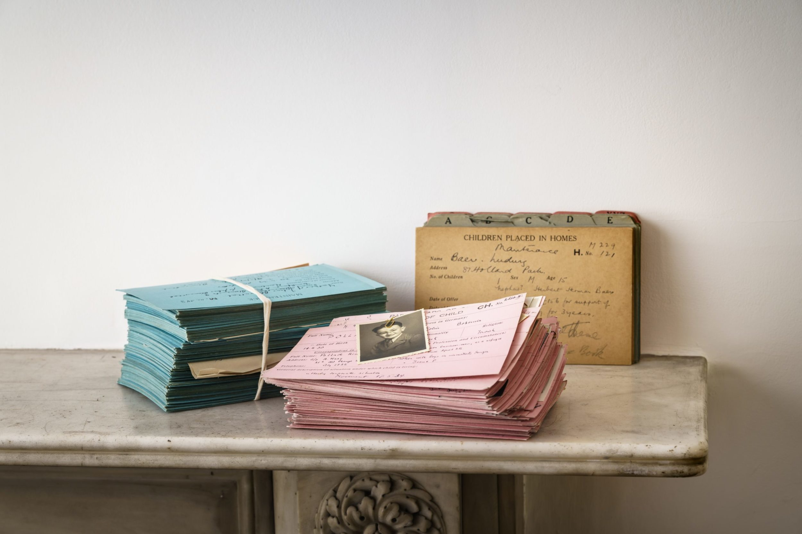

Documenting the Documenter: Piecing together the history of Polish Holocaust survivor-historian Luba Melchior
“Testimony received by Institute Assistant Luba Melchior.” This sentence appears on 61 of the 512 complete witness testimonies collected from Polish survivors of Nazi persecution by the Polish Research Institute (PIZ) in Lund, Sweden, in 1945 and 1946.1 Yet, Polish Holocaust survivor Luba Melchior did not leave her own testimony with the PIZ survivor historical commission and documentation center. Nor, it seems, did she leave behind any deliberate personal account of her life and experiences before, during, or after the Second World War and the Holocaust.
As the only Jewish survivor of Nazi persecution employed as part of the primarily non-Jewish PIZ historical commission and documentation center, Luba Melchior was responsible not only for interviewing other survivors, but also for the Jewish “section” of the institute.2 In this capacity, she coordinated and met with Dr. Nella Rost at the World Jewish Congress’ Jewish Historical Commission in Stockholm and collaborated with the Conseil des Associations Juives de Belgique (Council of Jewish Associations of Belgium) in Brussels. Although her role at PIZ is well known, she exists in most published research as little more than a footnote.3
In these and other respects, Luba Melchior is not unlike Rachel Auerbach, Miriam Novitch, Eva Reichmann, and Nella Rost, whose contributions to documenting the history of the Holocaust have received scant scholarly attention until relatively recently. The neglect has been due to a variety of factors, including their gender, education, and the nature of their documentation work.
Holocaust have received scant scholarly attention
As scholars such as Laura Jockusch and Boaz Cohen have argued, organized Holocaust documentation efforts in the post-war period were dominated at the highest ranks by men, among them historians and other academics. Women were mainly conducting interviews, collecting material, and working as archivists and secretaries.4 In addition, most of the women involved in these efforts were neither professional historians nor even academics. This was true of Rachel Auerbach, Miriam Novitch, and Luba Melchior, and partly true of Nella Rost and Eva Reichmann, who had doctoral degrees but not in the discipline of history.
Historian Sharon Geva argues that the marginalization of Rachel Auberbach and Miriam Novitch can be attributed in part to the fact that their work of documenting, researching, and commemorating the Holocaust “reflected distinctly feminine attributes” and “their work as documenters took place behind the scenes.”5 For these and other reasons, the predominantly male leaders of the historical commissions have received most of the recognition as ‘survivor-historians’ of the Holocaust.
Holocaust have received scant scholarly attention
Fortunately, awareness of women’s crucial role in documenting the Holocaust has been slowly increasing thanks to recent research that sheds light on the work of Rachel Auerbach, Miriam Novitch, Eva Reichmann, and Nella Rost.6 This research breaks through a notion of Holocaust survivor-historians as primarily male academics and professional historians who led the Holocaust historical commissions and documentation centers. It does this by acknowledging that although these women (and, by extension, other women and men like them) may not have been professional historians or even academics, they were Holocaust survivor-historians because they dedicated themselves to the cause of documenting, collecting, preserving, and commemorating the experiences of others for the sake of history and justice. They also influenced and established methods and methodologies for interviewing, collecting, and archiving, and fought in various ways against bureaucracy, lack of funding, and public and academic disinterest to continue collecting, preserve existing collections, and so forth.
The result of their efforts are the collections of testimonies, documents, artifacts, and other material that historians and other researchers are still only beginning to analyze. As Sharon Geva suggests, the passing of the survivor generation has increased the understanding of how valuable this material is and, consequently, how important survivor-historians like Auerbach and Novitch are to knowledge of and scholarship on the Holocaust.7
Holocaust have received scant scholarly attention
This is a critical shift in thinking, researching, and writing about early Holocaust documentation efforts and the survivors who conducted this work. It drives home how little is known about the many women and men who can and should be recognized as Holocaust survivor-historians, and how gaining such missing knowledge can improve our understanding of both the Holocaust and early attempts to document Holocaust history.
In my research, Luba Melchior is one of these individuals.8 And while I believe the case should be made for all the survivors of the PIZ historical commission, I argue that recognizing and analyzing Luba Melchior as a survivor-historian, as has been done to different extents with Rachel Auerbach, Miriam Novitch, Eva Reichmann, and Nella Rost, helps to understand PIZ – a Polish (i.e., non-Jewish) historical commission with a ‘Jewish section’ – in the context of the overall phenomenon of Jewish survivor historical commissions. It also takes Luba Melchior out of the footnotes and into the analysis, making visible not only that but also how she contributed to documenting Holocaust history.
Holocaust have received scant scholarly attention
But, as this blog contribution demonstrates, on top of the reasons already given that have kept her and others in the margins, an additional impediment to making my argument is a dearth of empirical materials. Rachel Auerbach, Miriam Novitch, Eva Reichmann, and Nella Rost made their contributions to documenting Holocaust history in notable positions over long periods of time and left behind extensive empirical materials for researchers.9 By contrast, Luba Melchior conducted her most notable and ostensibly well-documented work in the historically more obscure context of Sweden during the course of just over a year and left behind a less extensive collection of testimonies and empirical legacy than her four contemporaries. While there are hints of further contributions she made to documenting Holocaust history, the details are elusive. The challenge I face in my research is finding and piecing together whatever material does exist to make empirically-sound arguments about Luba Melchior’s role and significance in relation to PIZ and Holocaust history.
Here, I share where I currently stand in this ongoing methodological journey. What follows represents a first attempt at coalescing the documents and other material I have gathered to-date into a cohesive but incomplete narrative of Luba Melchior’s life and experiences as a Holocaust survivor and a Holocaust survivor-historian. It is a work in progress, and my hope is that by openly sharing this journey with others in this area of research, more documents about Luba Melchior may be identified that can help write her history.